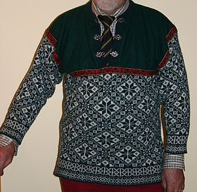

A sweater (North American English) or pullover, also called a jumper (British English and Australian English),[1] is a piece of clothing, typically with long sleeves, made of knitted or crocheted material, that covers the upper part of the body. When sleeveless, the garment is often called a slipover or sweater vest.
Sweaters are worn by adults and children, often over a shirt, blouse, T-shirt, or another top, but sometimes next to the skin. Sweaters were traditionally made from wool but can now be made of cotton, synthetic fibers, or any combination of these. There are also seasonal sweaters, which around Christmas are called "ugly sweaters"